朝聖之路徒步日誌
從台灣出發，5 月 21 日在法國 SJPP 跟著黃色箭頭正式啟程。34 天徒步、約 1,000 公里，走過 Santiago，再延伸到大西洋的 Fisterra 與 Muxía。這裡收錄旅程中的風景、相遇、迷路、疲憊，還有那些讓人想繼續走下去的瞬間。
出發前奏
從台灣出發，抵達法國之路起點
庇里牛斯山與納瓦拉
從 SJPP 翻越山脈，走進西班牙北部
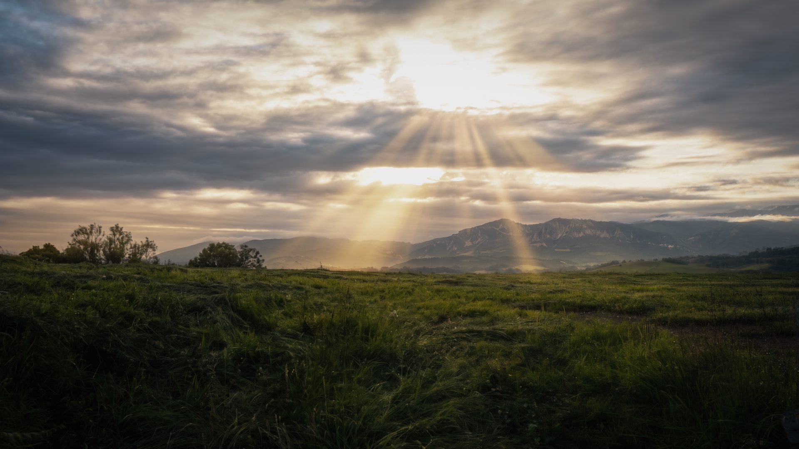
1480m、六千大卡、老奶奶的生日
SJPP → Roncesvalles
清晨六點，13 度的空氣涼得讓人清醒。1480 公尺的攀升，超過 6,000 大卡的體能消耗。朝聖之路第一天，翻越庇里牛斯山，從法國踏入西班牙。
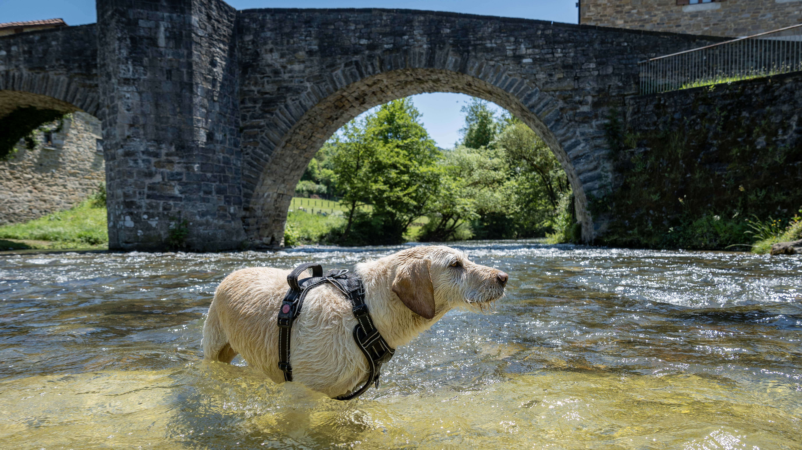
森林、溪水、橋樑之村
Roncesvalles → Zubiri · 21km
公立庇護所的規矩很鐵，晚上十點大門準時上鎖。昨晚成都小妹被反鎖門外，還好十一點我還醒著。打呼交響樂中折騰大半夜，清晨六點聖歌晨喚。跟庇里牛斯山比起來，今天的路溫柔得像擁抱。Zubiri 橋下溪水泡腳、超市買食材一起下廚。朝聖之路上最…
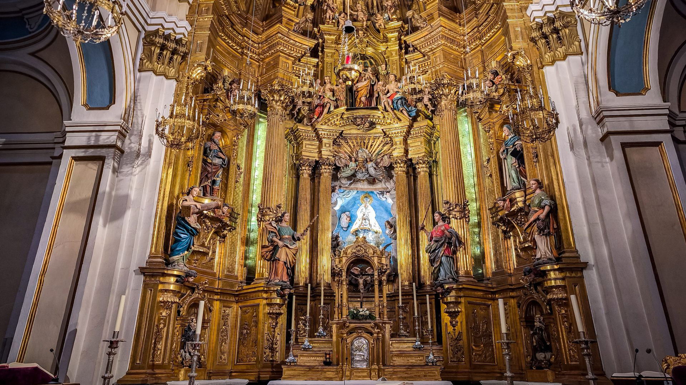
摸黑出發、米其林、純金教堂
Zubiri → Pamplona · 20km
為了搶庇護所的床位，四點多摸黑出發。天還沒亮，靠頭燈照路。路上撿到一隻拖鞋，追上去還給外國人，那瞬間我們都笑了。家樂福啤酒、Tortilla 烘蛋，中午抵達 Pamplona 鬥牛城。遇到環遊世界八個月的台灣女孩，眼裡閃著堅強的光芒…
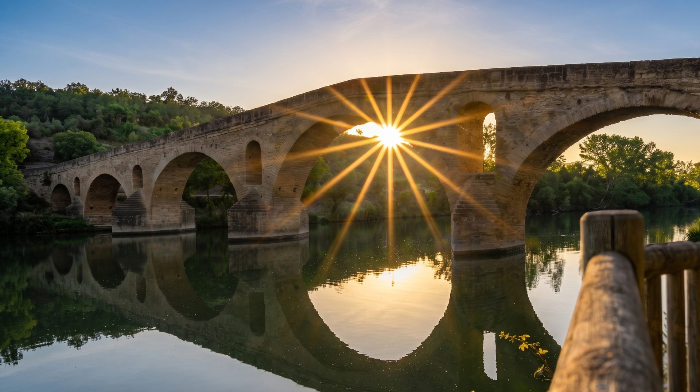
寬恕之丘、警察攔截、皇后之橋
Pamplona → Puente la Reina · 24km
趕在日出前再次出發，清晨五點的酒吧外還留著昨夜狂歡的人潮。走過白沙屯，這裡每天上上下下難度更高。田野遼闊、寬恕之丘鐵雕像、碎石陡降坡越野跑、四十度高溫被警察攔下、The Way 電影酒吧、檸檬汁攤、肥皂融化、教堂十字架祝福、皇后之橋夕陽。
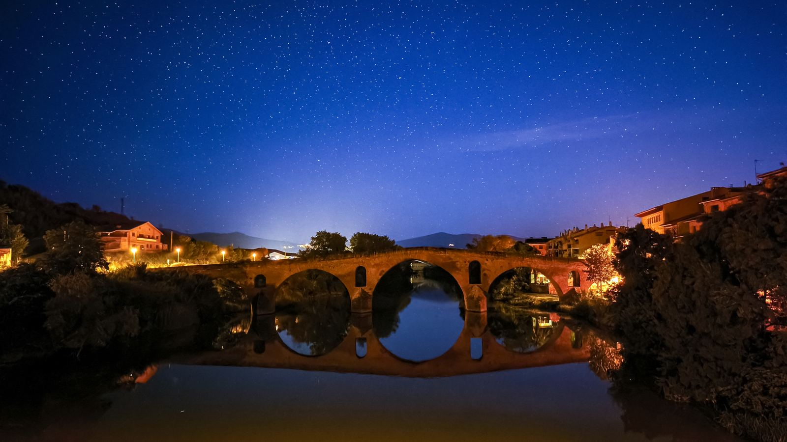
星空、韓國奶奶與100公里—Puente la Reina → Estella
Puente la Reina → Estella · 22.5km
摸黑出發遇滿天星斗，結伴翻越深山制高點，遇見 72 歲韓國奶奶，Navarra 田野風光無敵，徒步突破 100 公里，抵達星星之城 Estella。
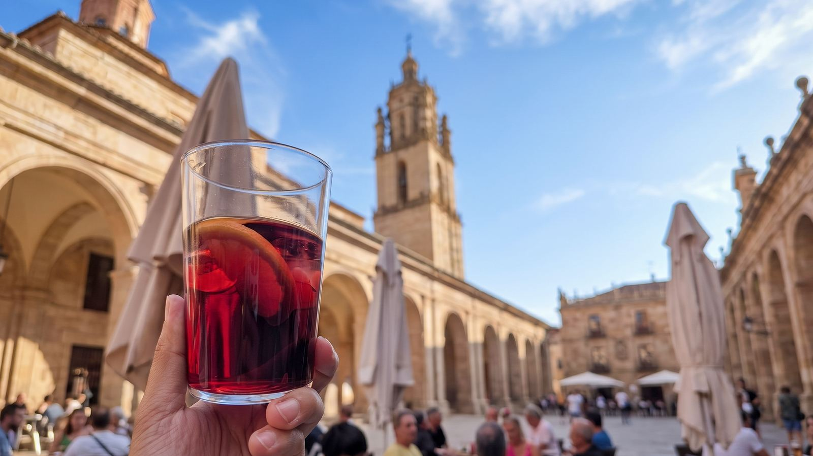
紅酒噴泉、夏日初雪與台灣同鄉—Estella → Los Arcos
Estella → Los Arcos · 21km
摸黑前往 Irache 紅酒噴泉，貝殼接紅酒的儀式感，葡萄園與夏日初雪般的棉絮，遇見牽手台灣同鄉與手搖脫水機。
La Rioja 紅酒之鄉
葡萄園、酒泉與沿途的人情味
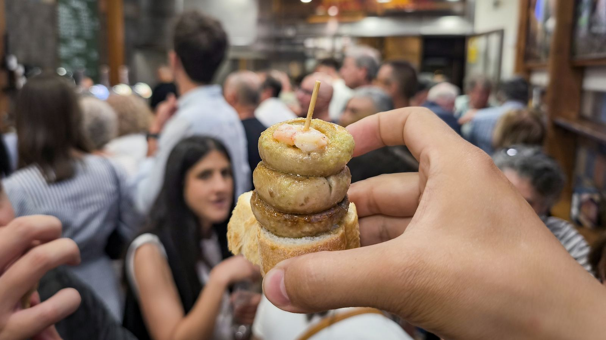
唱歌奶奶、陽傘支架與月桂街—Los Arcos → Logroño
Los Arcos → Logroño · 28km
晨曦空拍邁向酒鄉，唱歌跳舞的奶奶、陽傘支架抗 42 度熱浪，教堂庇護所彌撒與 Ultreia 合唱，月桂街蘑菇 Tapas 巡禮。
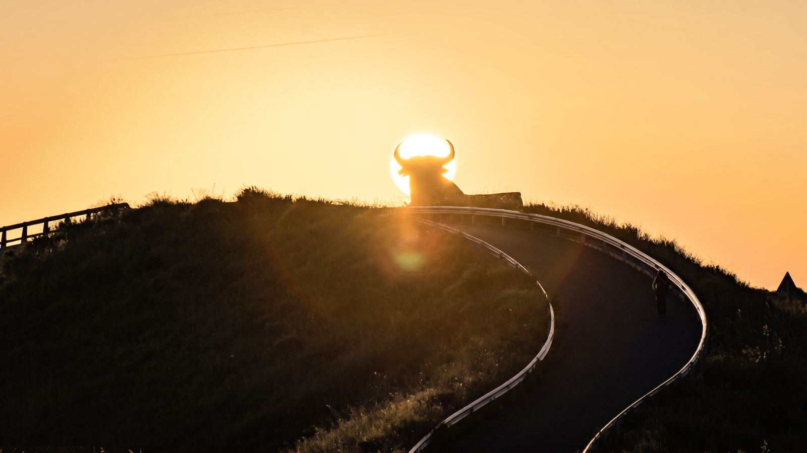
鏡面湖景、奧斯本公牛與冰啤酒—Logroño → Nájera
Logroño → Nájera · 29km
摸黑穿越 Logroño 迷宮，公園鏡面湖空拍，皮卡丘松鼠、樹枝十字架與奧斯本公牛，自由捐贈冰箱冰啤酒救命，溪流泡腳退燒。
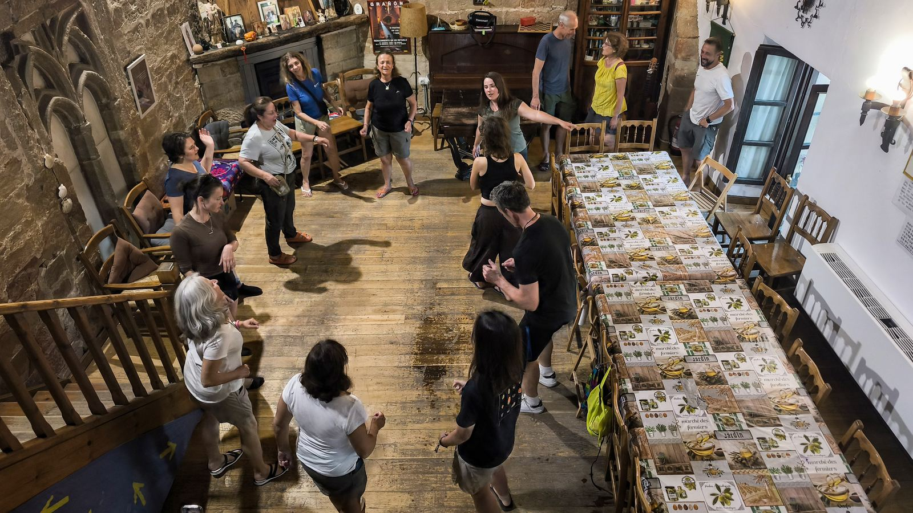
火燒日出、Windows麥田與Grañón教堂庇護所—Nájera → Grañón
Nájera → Grañón · 22km
史詩級火燒日出與 Windows 麥田空拍，錯過養雞教堂的遺憾，抵達 Grañón 自由捐贈教堂庇護所，共煮、拍桌禱告、跳舞與燭光分享。

晨曦、香港女孩與岩洞教堂—Tosantos的自由捐贈之夜
Grañón → Tosantos · 27km
法國朝聖之路走到第 10 天，身體開始習慣這條路的節奏，依舊搶在日出之前，再次背起行囊啟程。
梅塞塔高原
在遼闊平原、烈日與長距離中前進
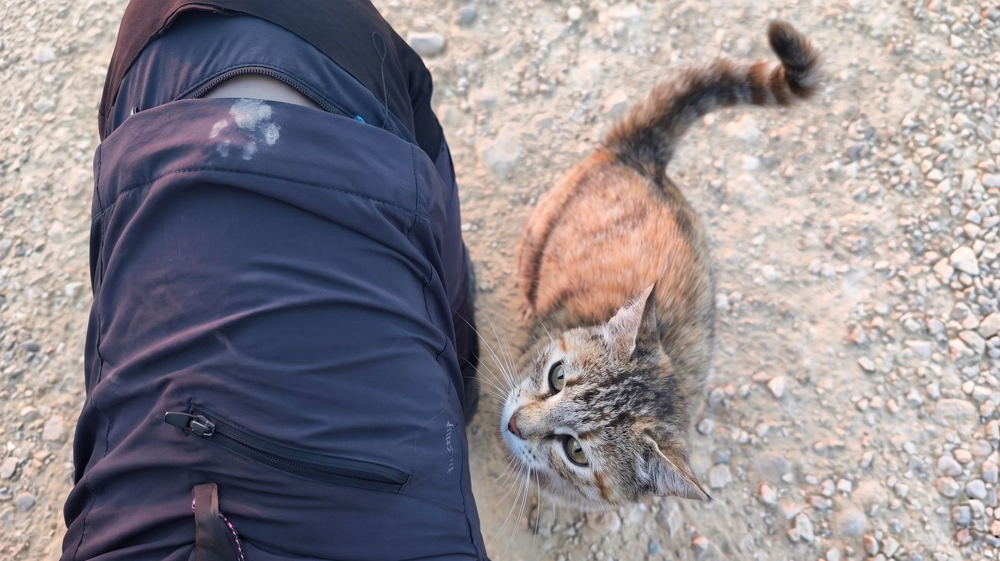
貓掌印、蠟章與千元羊毛襪—翻越山頂的絕美視野
Tosantos → Cardeñuela Riopico · 23km
才剛走出庇護所，就遇到小貓攔路討摸。完全抵擋不住撒嬌攻勢，蹲下好好享受了一番；牠還順便送了我一個朝聖路上絕無僅有的專屬紀念「貓爪印」。
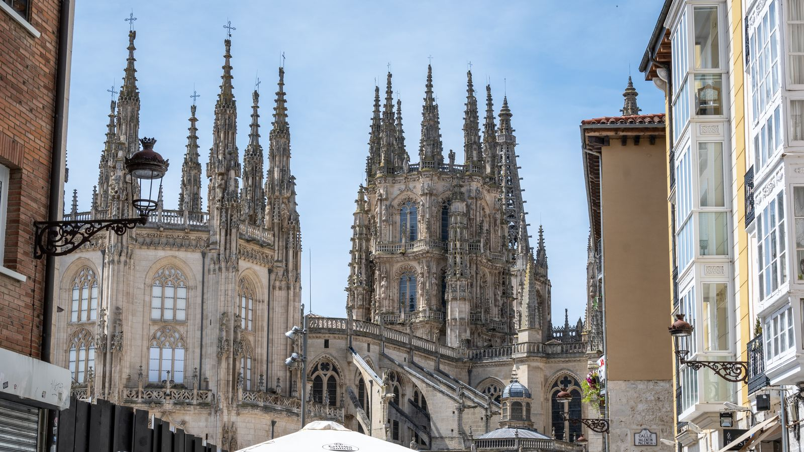
Burgos 休息日—13km 的慢步與哥德式震撼
Cardeñuela Riopico → Burgos · 13km
終於迎來久違的休息日！睡到太陽升起才慢慢晃出門。今天只有輕鬆的 13 公里，放慢腳步，享受難得不趕路的愜意節奏。
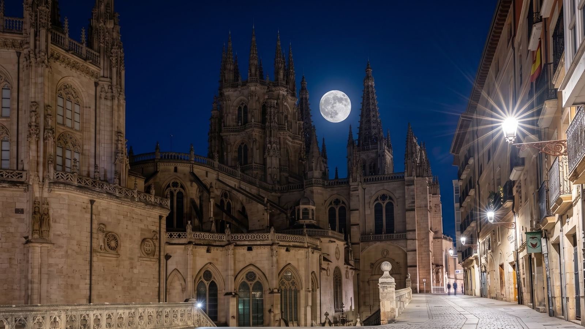
密室逃脫、高速公路與彩虹雲—Hontanas 的第一顆水泡
Burgos → Hontanas · 34km
清晨出門差點被困在庇護所。十幾個人站在鎖著的小門前一臉問號，在黑夜裡折騰了將近半小時，才發現關鍵按鈕竟然隱藏在右側牆壁。一大早就上演庇護所「密室逃脫」。
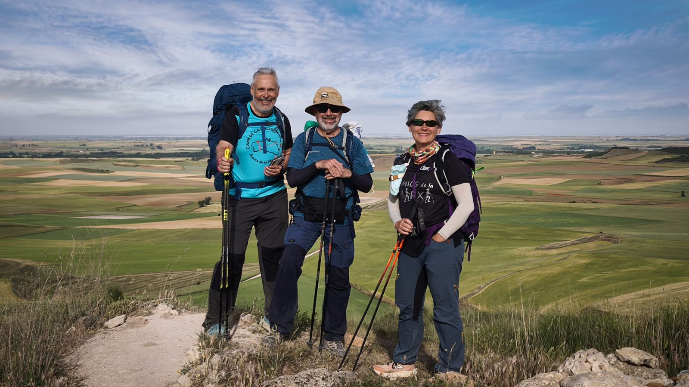
破曉修道院、18% 陡坡與警察印章—泳池旁的慶生
Hontanas → Boadilla del Camino · 31km
天還沒亮，摸黑從小鎮啟程。荒野中溫度只有 8 度，整條朝聖路上只有幾盞頭燈在黑暗中隱約閃爍。
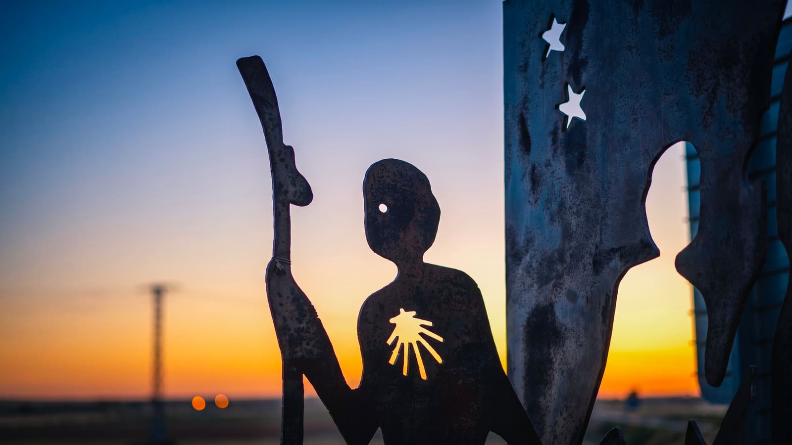
心流、貝殼與修女的愛心吊飾
Boadilla del Camino → Carrión de los Condes · 24km
法國之路第 15 天走 24 公里抵達 Carrión de los Condes，記錄晨間的朝聖貝殼與星空，以及修女庇護所與晚禱收到的愛心吊飾。
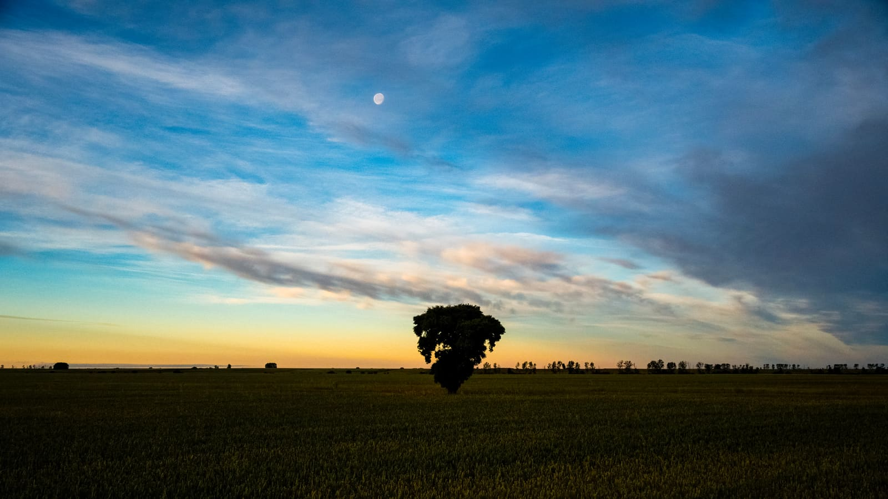
72 歲韓國奶奶、半程碑與 40 公里的道別
Carrión de los Condes → Sahagún · 40km
法國之路第 16 天從 Carrión 徒步 40 公里到 Sahagún，穿越 17 公里無補給路段，遇見 72 歲獨行的韓國奶奶，並在半程點領取證書。

36 公里、日出與中文小教室
Sahagún → Mansilla de las Mulas · 36km
從 Sahagún 徒步 36 公里到 Mansilla de las Mulas，摸黑出發迎接日出，途中重逢香港旅人，並在庇護所和熱情志工上了一堂中文小課。
León 與中世紀小鎮
古城、教堂與歷史街道
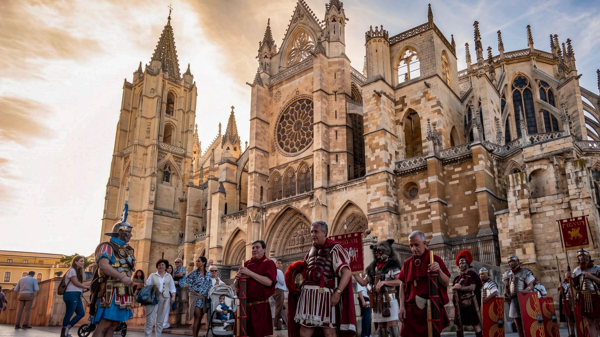
León：拳擊冠軍的蠟章、光之殿堂與酒吧巡禮
Mansilla de las Mulas → León · 19km
今天相對輕鬆，迎著金燦燦的日出往大城市 León 出發！ 經過小橋前的立牌寫著：「真的快不行了！堅持！」——絕對是走到快崩潰，對自己心理喊話。看了忍不住笑出來，卻也莫名被打氣。
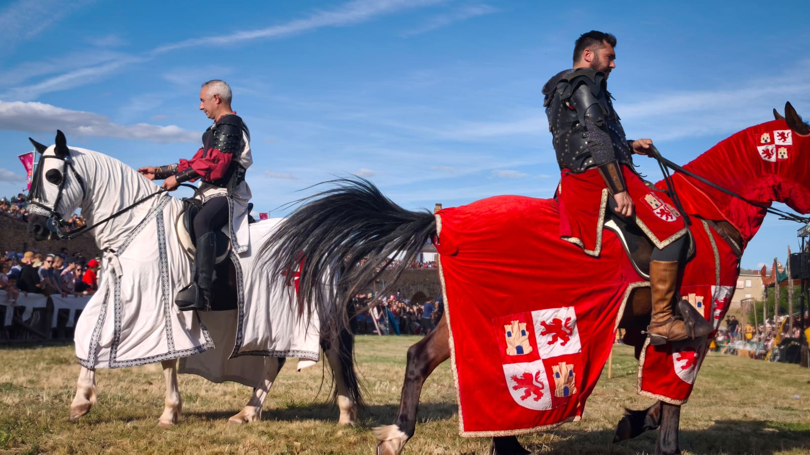
Hospital de Órbigo：穿越到 15 世紀的中世紀嘉年華
León → Hospital de Órbigo · 20km
從 León 徒步 20 公里到 Hospital de Órbigo，沿途進入法國之路最後 300 公里，並遇上一年一度的中世紀嘉年華、騎士比武與遊行。
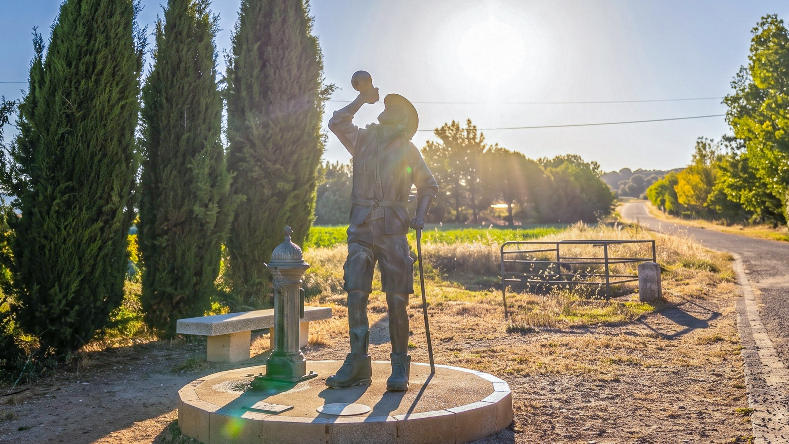
高第建築、留言本的巧合、註定的相遇
Hospital de Órbigo → Rabanal del Camino · 37km
昨晚 Hospital de Órbigo 的中世紀長槍對決實在太瘋狂了，戰馬嘶鳴、長槍折斷的畫面到現在還在腦海裡轉。帶著那份熱血，摸黑推進 37 公里。
鐵十字架與加利西亞山區
放下石頭、翻過山口，走向綠色山谷
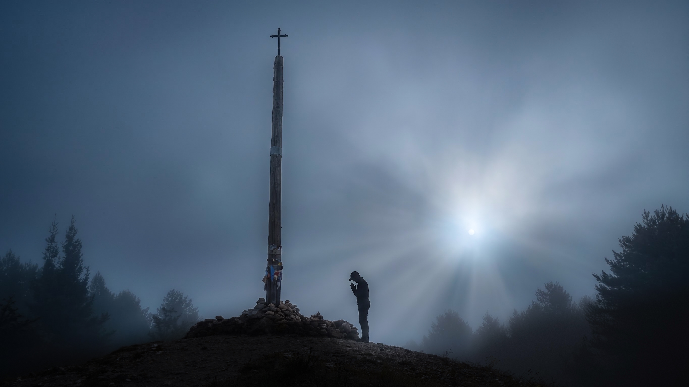
鐵十字架、放下石頭、膝蓋不是自己的
Rabanal del Camino → Ponferrada · 31km
第 21 天清晨出發，氣溫只剩 5 度。踩著滿地碎石坡摸黑往上爬，迎著日出放下石頭，一路往高處走。
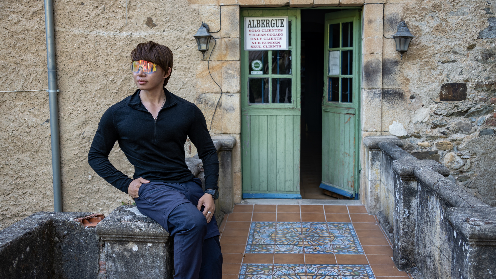
進入倒數 200km、韓國人朝聖之謎
Ponferrada → Villafranca del Bierzo · 26km
Ponferrada 的聖殿騎士古堡泡在晨曦裡，踩著剛甦醒的光線繼續往西，正式進入倒數 200 公里的路段。
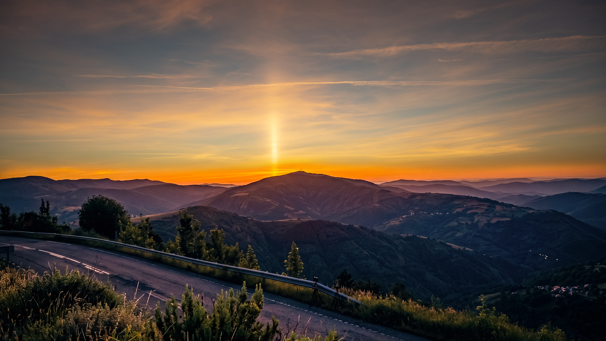
O Cebreiro、最後的爬升、人生也是這樣
Villafranca del Bierzo → O Cebreiro · 29km
29 公里、爬升 1085 公尺——傳說中的最後爬升。趁著月色摸黑出發，翻越山口迎接火燒雲夕陽。
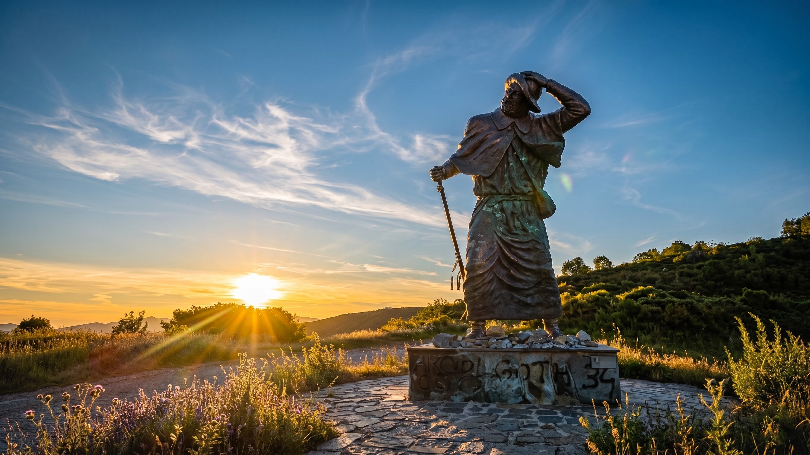
Samos、多走 7 公里、克羅埃西亞爺爺
O Cebreiro → Samos · 31.7km
伴著月色摸黑出發，告別最美的日落山頂，走向千年修道院所在的 Samos。
最後 100 公里，走進 Santiago
從 Portomarín 出發，抵達聖地牙哥大教堂

100km 石碑、捨不得的過程
Samos → Portomarín · 38km
摸黑離開 Samos 小鎮，鑽進漆黑的森林小徑，心臟真的要很大顆——幾隻野狗突然衝出來狂吠，還好我們有結伴，野狗看人不只一個也不敢靠近。這時候深刻體悟到夥伴的重要性，大清早直接驚嚇醒腦。

德州志工、手寫明信片、被在乎的感覺
Portomarín → Ligonde · 16.5km
昨晚下了一場大雨，本來有點擔心，結果老天給了超美好的清晨！今天行程超佛心，從 Portomarín 到 Ligonde 只有短短 16.5 公里。為什麼刻意走這麼短？因為今晚要去朝聖之路上最後一個自由捐贈的庇護所！放慢腳步，好好享受…
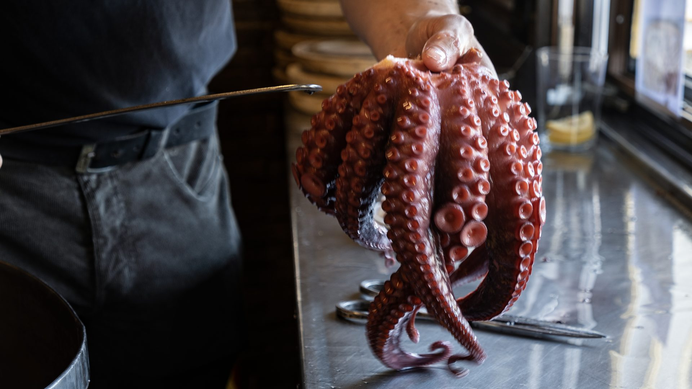
Melide 章魚、世界盃、停下來的時候
Ligonde → Melide · 25km
一早，志工準備了暖心早餐，桌上竟然還有給每個人的手寫卡片，字裡行間滿滿祝福。帶著這份心意出發，心裡真的暖暖的。
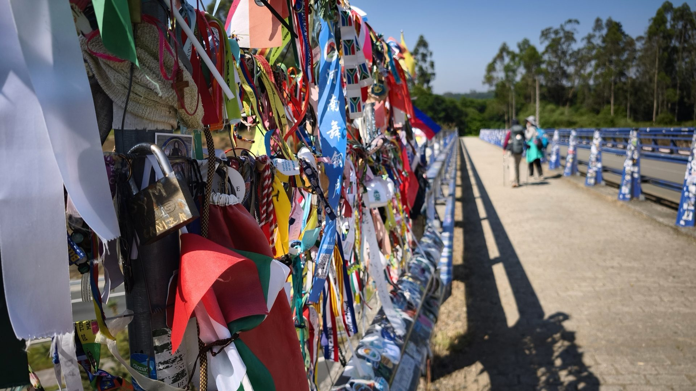
霧中行走、畢業前夕、終於睡到下鋪
Melide → O Pedrouzo · 33km
今天是第 28 天，前往 O Pedrouzo，距離 33 公里——抵達終點聖地牙哥前的最後一個大站。
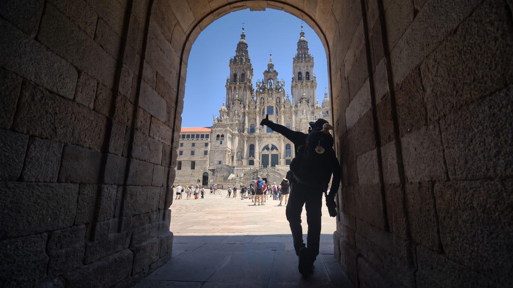
Santiago、800公里後、抵達不是為了停下
O Pedrouzo → Santiago de Compostela · 20km
走到最後這幾天才真的意識到：這趟朝聖之路真的快走完了。如果照官方指南，每天走 20 到 25 公里，走完 800 公里的法國之路大約需要 35 天。但我們從來沒打算追求這個「標準答案」——偏愛自由捐贈的庇護所，完全照自己的節奏：有幾…
離開聖城，走向世界盡頭
從 Santiago 延伸至 Fisterra 與 Muxía
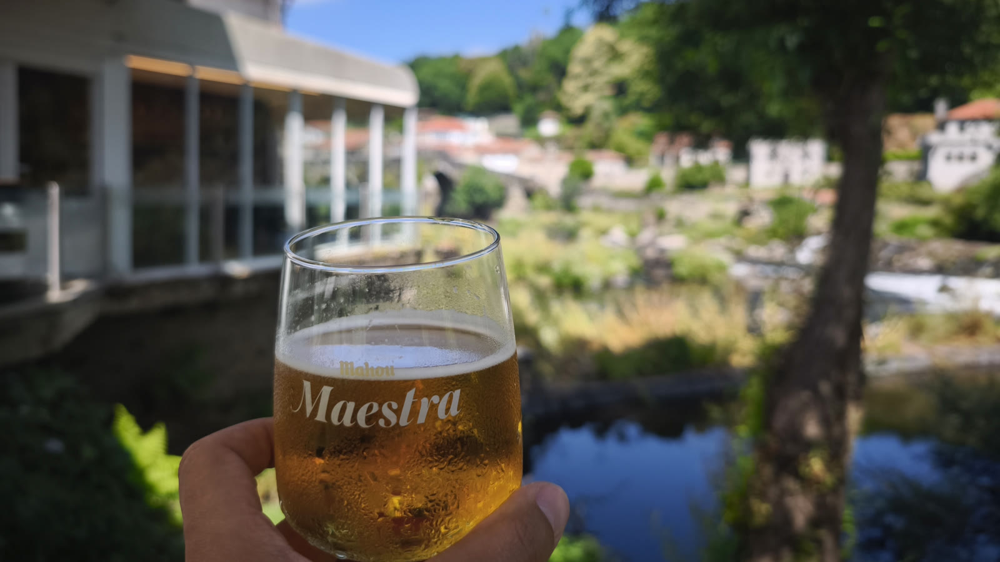
Negreira、離開聖城、熟悉的寧靜
Santiago → Negreira · 22km
朝聖之路第 30 天！聖地牙哥的早晨，被厚厚的迷霧籠罩著。但這裡還不是終點——我們背起行囊，繼續走向「世界盡頭」。
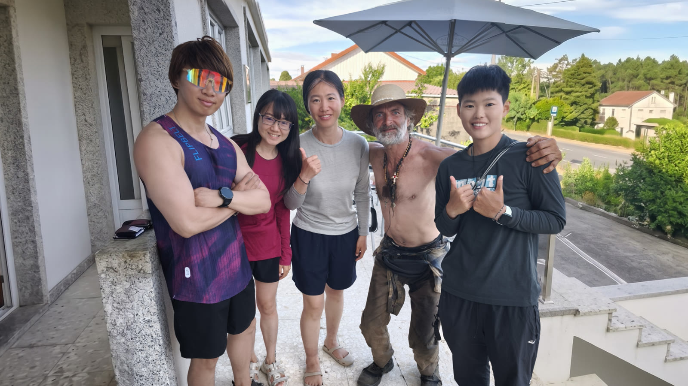
比臉大炸豬排、三年半的步行者
Negreira → Santa Mariña · 21km
走著走著，太陽出來了。日出穿雲灑光，俯瞰石屋村鎮；陽光穿透大樹枝葉，草地還帶著薄霧——加利西亞的早晨，永遠有驚喜。
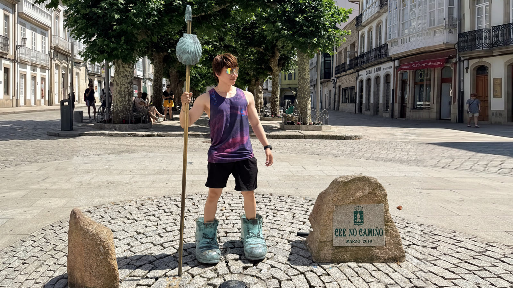
Cee、海邊小鎮、啤酒蝦的慰藉
Santa Mariña → Cee · 32km
第 32 天，天還沒亮就出發，眼前的加利西亞被大霧完全籠罩。今天是一場 32 公里的硬仗。
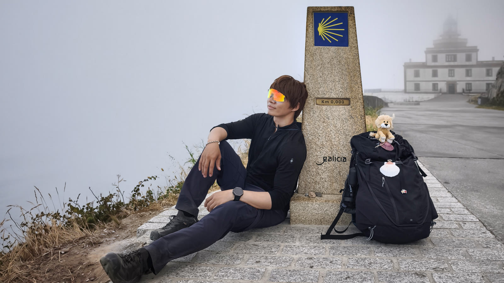
Fisterra、大地盡頭、0.00km
Cee → Fisterra · 21.7km
晨光破曉，沿著平靜的海岸線啟程。金色陽光灑在海面上，波光粼粼——今天要去的地方，是世界盡頭。
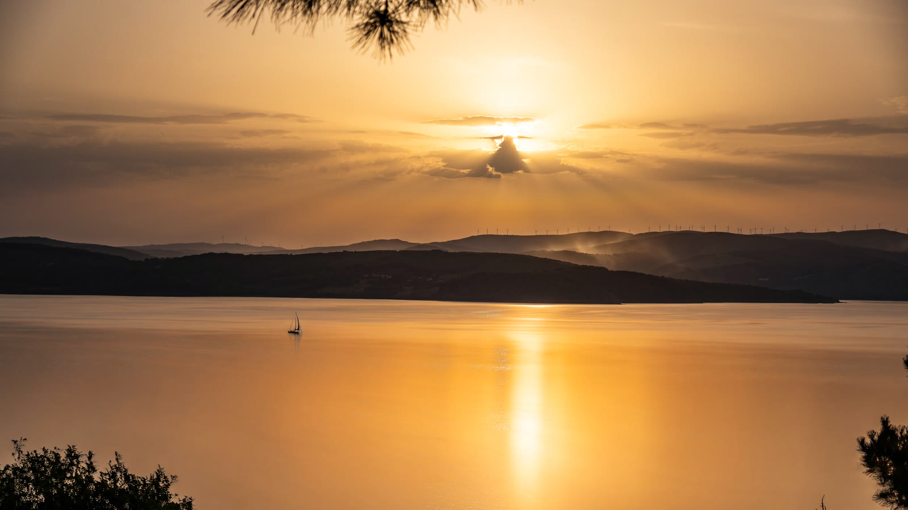
Muxia、徒步最後一天、與柏油路對話
Fisterra → Muxía · 33km
昨晚在 Fisterra，我們看著夕陽沉入深海。今天背起行囊，踏上最後的 33 公里，走向象徵「洗滌與重生」的 Muxía。舊的靈魂已經留在世界盡頭，現在每往前一步，都是全新的自己。
回程與回家
從 Muxía 返回 Santiago、前往 Madrid，最後回到台灣

1000公里的句點、火把節、回歸起點
Muxía → Santiago de Compostela · 巴士歸途
今天依舊趕在日出前出發！目的地很近——距離只有 1.5 公里的那座 0 公里石碑。即使聽說這裡已經連著一整個禮拜都是陰天，心裡卻還是抱著一絲期待：希望在世界盡頭看見日出的那一刻。
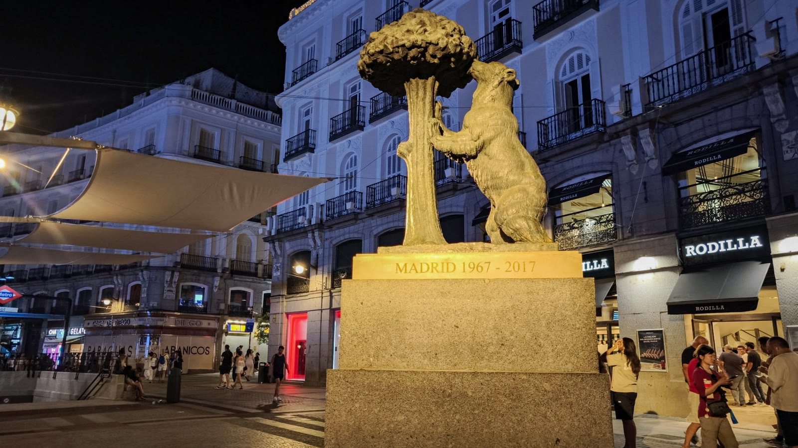
馬德里、從一個零公里到另一個零公里
Santiago → Madrid · 高鐵北上
火把節狂歡後，在庇護所手寫下最後的感動，高鐵北上，從一個零公里走向另一個零公里。
回家、紅布條、Buen Camino
Madrid → Taiwan · 回家
真正的終點，是熟悉的味道。Buen Camino！